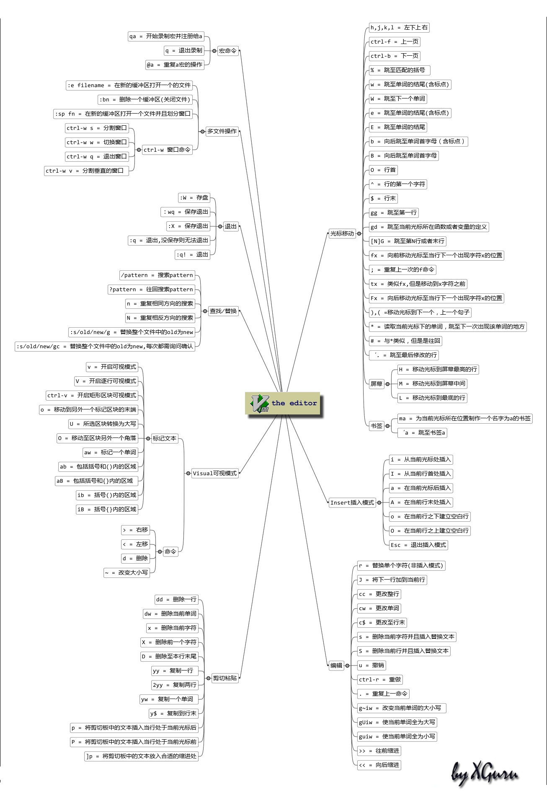

[简单地，可以使用上下左右方向箭头和delete，backspace键来进行位置移动和删除，不管是命令模式还是插入模式]
1、vi的基本概念
基本上vi可以分为三种状态，分别是命令模式（command mode）、插入模式（Insert mode）和底行模式（last line mode），各模式的功能区分如下：
1) 命令行模式command mode）
控制屏幕光标的移动，字符、字或行的删除，移动复制某区段及进入Insert mode下，或者到 last line mode。
2) 插入模式（Insert mode）
只有在Insert mode下，才可以做文字输入，按「ESC」键可回到命令行模式。
3) 底行模式（last line mode）
将文件保存或退出vi，也可以设置编辑环境，如寻找字符串、列出行号……等。
不过一般我们在使用时把vi简化成两个模式，就是将底行模式（last line mode）也算入命令行模式command mode）。
2、vi的基本操作
a) 进入vi
在系统提示符号输入vi及文件名称后，就进入vi全屏幕编辑画面：$ vi myfile。不过有一点要特别注意，就是您进入vi之后，是处于「命令行模式（command mode）」，您要切换到「插入模式（Insert mode）」才能够输入文字。初次使用vi的人都会想先用上下左右键移动光标，结果电脑一直哔哔叫，把自己气个半死，所以进入vi后，先不要乱动，转换到「插入模式（Insert mode）」再说吧！
b) 切换至插入模式（Insert mode）编辑文件
在「命令行模式（command mode）」下按一下字母「i」就可以进入「插入模式（Insert mode）」，这时候你就可以开始输入文字了。
c) Insert 的切换
您目前处于「插入模式（Insert mode）」，您就只能一直输入文字，如果您发现输错了字！想用光标键往回移动，将该字删除，就要先按一下「ESC」键转到「命令行模式（command mode）」再删除文字。
d) 退出vi及保存文件
在「命令行模式（command mode）」下，按一下「：」冒号键进入「Last line mode」，例如：
: w filename （输入 「w filename」将文章以指定的文件名filename保存）
: wq (输入「wq」，存盘并退出vi)
: q! (输入q!， 不存盘强制退出vi)
3、命令行模式（command mode）功能键
1）. 插入模式
按「i」切换进入插入模式「insert mode」，按“i”进入插入模式后是从光标当前位置开始输入文件；
按「a」进入插入模式后，是从目前光标所在位置的下一个位置开始输入文字；
按「o」进入插入模式后，是插入新的一行，从行首开始输入文字。
2）. 从插入模式切换为命令行模式
按「ESC」键。
3）. 移动光标
vi可以直接用键盘上的光标来上下左右移动，但正规的vi是用小写英文字母「h」、「j」、「k」、「l」，分别控制光标左、下、上、右移一格。
按「ctrl」+「b」：屏幕往“后”移动一页。
按「ctrl」+「f」：屏幕往“前”移动一页。
按「ctrl」+「u」：屏幕往“后”移动半页。
按「ctrl」+「d」：屏幕往“前”移动半页。
按数字「0」：移到文章的开头。
按「G」：移动到文章的最后。
按「$」：移动到光标所在行的“行尾”。
按「^」：移动到光标所在行的“行首”
按「w」：光标跳到下个字的开头
按「e」：光标跳到下个字的字尾
按「b」：光标回到上个字的开头
按「#l」：光标移到该行的第#个位置，如：5l,56l。
4）. 删除文字
「x」：每按一次，删除光标所在位置的“后面”一个字符。
「#x」：例如，「6x」表示删除光标所在位置的“后面”6个字符。
「X」：大写的X，每按一次，删除光标所在位置的“前面”一个字符。
「#X」：例如，「20X」表示删除光标所在位置的“前面”20个字符。
「dd」：删除光标所在行。
「#dd」：从光标所在行开始删除#行
5）. 复制
「yw」：将光标所在之处到字尾的字符复制到缓冲区中。
「#yw」：复制#个字到缓冲区
「yy」：复制光标所在行到缓冲区。
「#yy」：例如，「6yy」表示拷贝从光标所在的该行“往下数”6行文字。
「p」：将缓冲区内的字符贴到光标所在位置。注意：所有与“y”有关的复制命令都必须与“p”配合才能完成复制与粘贴功能。
6）. 替换
「r」：替换光标所在处的字符。
「R」：替换光标所到之处的字符，直到按下「ESC」键为止。
7）. 回复上一次操作
「u」：如果您误执行一个命令，可以马上按下「u」，回到上一个操作。按多次“u”可以执行多次回复。
8）. 更改
「cw」：更改光标所在处的字到字尾处
「c#w」：例如，「c3w」表示更改3个字
9）. 跳至指定的行
「ctrl」+「g」列出光标所在行的行号。
「#G」：例如，「15G」，表示移动光标至文章的第15行行首。
4、Last line mode下命令简介
在使用「last line mode」之前，请记住先按「ESC」键确定您已经处于「command mode」下后，再按「：」冒号即可进入「last line mode」。
A) 列出行号
「set nu」：输入「set nu」后，会在文件中的每一行前面列出行号。
B) 跳到文件中的某一行
「#」：「#」号表示一个数字，在冒号后输入一个数字，再按回车键就会跳到该行了，如输入数字15，再回车，就会跳到文章的第15行。
C) 查找字符
「/关键字」：先按「/」键，再输入您想寻找的字符，如果第一次找的关键字不是您想要的，可以一直按「n」会往后寻找到您要的关键字为止。
「?关键字」：先按「?」键，再输入您想寻找的字符，如果第一次找的关键字不是您想要的，可以一直按「n」会往前寻找到您要的关键字为止。
D) 保存文件
「w」：在冒号输入字母「w」就可以将文件保存起来。
E) 离开vi
「q」：按「q」就是退出，如果无法离开vi，可以在「q」后跟一个「!」强制离开vi。
「qw」：一般建议离开时，搭配「w」一起使用，这样在退出的时候还可以保存文件。
5、vi命令列表
1) 下表列出命令模式下的一些键的功能：
h左移光标一个字符
l右移光标一个字符
k光标上移一行
j光标下移一行
^光标移动至行首
0数字“0”，光标移至文章的开头
G光标移至文章的最后
$光标移动至行尾
Ctrl+f向前翻屏
Ctrl+b向后翻屏
Ctrl+d向前翻半屏
Ctrl+u向后翻半屏
i在光标位置前插入字符
a在光标所在位置的后一个字符开始增加
o插入新的一行，从行首开始输入
ESC从输入状态退至命令状态
x删除光标后面的字符
#x删除光标后的＃个字符
X(大写X)，删除光标前面的字符
#X删除光标前面的#个字符
dd删除光标所在的行
#dd删除从光标所在行数的#行
yw复制光标所在位置的一个字
#yw复制光标所在位置的#个字
yy复制光标所在位置的一行
#yy复制从光标所在行数的#行
p粘贴
u取消操作
cw更改光标所在位置的一个字
#cw更改光标所在位置的#个字
2) 下表列出行命令模式下的一些指令
w filename储存正在编辑的文件为filename
wq filename储存正在编辑的文件为filename，并退出vi
q!放弃所有修改，退出vi
set nu显示行号
/或?查找，在/后输入要查找的内容
n与/或?一起使用，如果查找的内容不是想要找的关键字，按n或向后（与/联用）或向前（与?联用）继续查找，直到找到为止。
高手总结的图：
